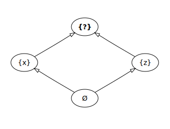
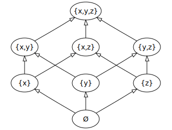

RxDB CRDT Plugin (beta)
Whenever there are multiple instances in a distributed system, data writes can cause conflicts. Two different clients could do a write to the same document at the same time or while they are both offline. When the clients replicate the document state with the server, a conflict emerges that must be resolved by the system.
In RXDB, conflicts are normally resolved by setting a conflictHandler when creating a collection. The conflict handler is a JavaScript function that gets the two conflicting states of the same document and it will return the resolved document state.
The default conflict handler will always drop the fork state and use the master state to ensure that clients that have been offline for a long time, do not overwrite other clients changes when they go online again.

With CRDTs (short for Conflict-free replicated data type), all document writes are represented as CRDT operations in plain JSON. The CRDT operations are stored together with the document and each time a conflict arises, the CRDT conflict handler will automatically merge the operations in a deterministic way. Using CRDTs is an easy way to "magically" handle all conflict problems in your application by storing the deltas of writes together with the document data.

RxDB CRDT operations
In RXDB, a CRDT operation is defined with NoSQL update operators, like you might know them from MongoDB update operations or the RxDB update plugin. To run the operators, RxDB uses the modifyjs library.
A CRDT operator example:
const myCRDTOperation = {
// increment the points field by +1
$inc: {
points: 1
},
// set the modified field to true
$set: {
modified: true
}
};
Operators
At the moment, not all possible operators are implemented in modifyjs, if you need additional ones, you should make a pull request there.
The following operators can be used at this point in time:
$min$max$inc$set$unset$push$pushAll$addToSet$pop$pullAll$rename
For the exact definition on how each operator behaves, check out the MongoDB documentation on update operators.
Installation
To use CRDTs with RxDB, you need the following:
- Add the CRDT plugin via
addRxPlugin. - Add a field to your schema that defines where to store the CRDT operations via
getCRDTSchemaPart() - Set the
crdtoptions in your schema. - Do NOT set a custom conflict handler, the plugin will use its own one.
// import the relevant parts from the CRDT plugin
import {
getCRDTSchemaPart,
RxDDcrdtPlugin,
getCRDTConflictHandler
} from 'rxdb/plugins/crdt';
// add the CRDT plugin to RxDB
import { addRxPlugin } from 'rxdb';
addRxPlugin(RxDDcrdtPlugin);
// create a database
import { createRxDatabase } from 'rxdb';
import { getRxStorageDexie } from 'rxdb/plugins/dexie';
const myDatabase = await createRxDatabase({
name: 'heroesdb',
storage: getRxStorageDexie()
});
// create a schema with the CRDT options
const mySchema = {
version: 0,
primaryKey: 'id',
type: 'object',
properties: {
id: {
type: 'string',
maxLength: 100
},
points: {
type: 'number',
maximum: 100,
minimum: 0
},
crdts: getCRDTSchemaPart() // use this field to store the CRDT operations
},
required: ['id', 'points'],
crdt: { // CRDT options
field: 'crdts'
}
}
// add a collection
await db.addCollections({
users: {
schema: mySchema
}
});
// insert a document
const myDocument = await db.users.insert({id: 'alice', points: 0});
// run a CRDT operation that increments the 'points' by one
await myDocument.updateCRDT({
ifMatch: {
$inc: {
points: 1
}
}
});
Conditional CRDT operations
By default, all CRDTs operations will be run to build the current document state. But in many cases, more granular operations are required to better reflect the desired business logic. For these cases, conditional CRDTs can be used.
For example if you have a field points with a maximum of 100, you might want to only run an $inc operations, if the points value is less then 100.
In an conditional CRDT, you can specify a selector and the operation sets ifMatch and ifNotMatch. At each time the CRDT is applied to the document state, first the selector will run and evaluate which operations path must be used.
await myDocument.updateCRDT({
// only if the selector matches, the ifMatch operation will run
selector: {
age: {
$lt: 100
}
},
// an operation that runs if the selector matches
ifMatch: {
$inc: {
points: 1
}
},
// if the selector does NOT match, you could run a different operation instead
ifNotMatch: {
// ...
}
});
Running multiples operations at once
By default, one CRDT operation is applied to the document in a single database write. To represent more complex logic chains, it might make sense to use multiple CRDTs and write them at once inside of a single atomic document write.
For these cases, the updateCRDT() method allows to pass an array of operations.
await myDocument.updateCRDT([
{
selector: { /** ... **/ },
ifMatch: { /** ... **/ }
},
{
selector: { /** ... **/ },
ifMatch: { /** ... **/ }
},
{
selector: { /** ... **/ },
ifMatch: { /** ... **/ }
},
{
selector: { /** ... **/ },
ifMatch: { /** ... **/ }
}
]);
CRDTs on inserts
When CRDTs are enabled with the plugin, all insert operations are automatically mapped as CRDT operation with the $set operator.
// Calling RxCollection.insert()
await myRxCollection.insert({
id: 'foo'
points: 1
});
// is exactly equal to calling insertCRDT()
await myRxCollection.insertCRDT({
ifMatch: {
$set: {
id: 'foo'
points: 1
}
}
});
When the same document is inserted in multiple client instances and then replicated, a conflict will emerge and the insert-CRDTs will overwrite each other in a deterministic order.
You can use insertCRDT() to make conditional insert operations with any logic. To check for the previous existence of a document, use the $exists query operation on the primary key of the document.
await myRxCollection.insertCRDT({
selector: {
// only run if the document did not exist before.
id: { $exists: false }
},
ifMatch: {
// if the document did not exist, insert it
$set: {
id: 'foo'
points: 1
}
},
ifNotMatch: {
// if document existed already, increment the points by +1
$inc: {
points: 1
}
}
});
Deleting documents
You can delete a document with a CRDT operation by setting _deleted to true. Calling RxDocument.remove() will do exactly the same when CRDTs are activated.
await doc.updateCRDT({
ifMatch: {
$set: {
_deleted: true
}
}
});
// OR
await doc.remove();
CRDTs with replication
CRDT operations are stored inside of a special field besides your 'normal' document fields. When replicating document data with the RxDB replication or the CouchDB replication or even any custom replication, the CRDT operations must be replicated together with the document data as if they would be 'normal' a document property.
When any instances makes a write to the document, it is required to update the CRDT operations accordingly. For example if your custom backend updates a document, it must also do that by adding a CRDT operation. In dev-mode RxDB will refuse to store any document data where the document properties do not match the result of the CRDT operations.
Why not automerge.js or yjs?
There are already CRDT libraries out there that have been considered to be used with RxDB. The biggeste ones are automerge and yjs. The decision was made to not use these but instead go for a more NoSQL way of designing the CRDT format because:
- Users do not have to learn a new syntax but instead can use the NoSQL operations which they already know.
- RxDB is often used to replicate data with any custom backend on an already existing infrastructure. Using NoSQL operators instead of binary data in CRDTs, makes it easy to implement the exact same logic on these backends so that the backend can also do document writes and still be compliant to the RxDB CRDT plugin.
When to not use CRDTs
CRDT can only be use when your business logic allows to represent document changes via static json operators. If you can have cases where user interaction is required to correctly merge conflicting document states, you cannot use CRDTs for that.
Also when CRDTs are used, it is no longer allowed to do non-CRDT writes to the document properties.
TODOs
- Clean up old CRDT operations by crunching them together
- CRDT streaming replication